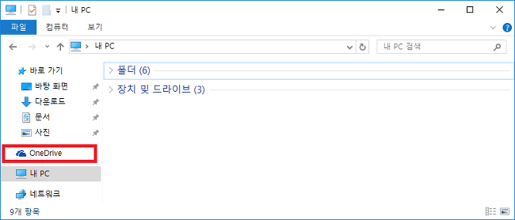
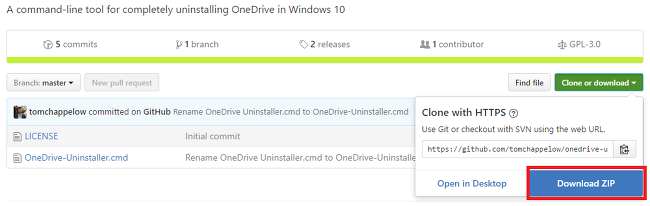
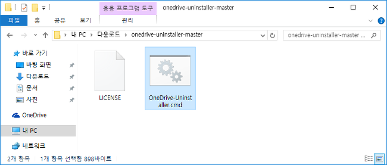
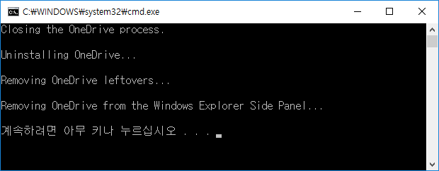
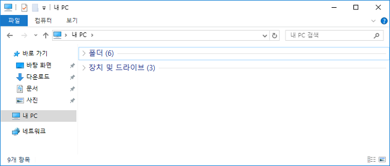
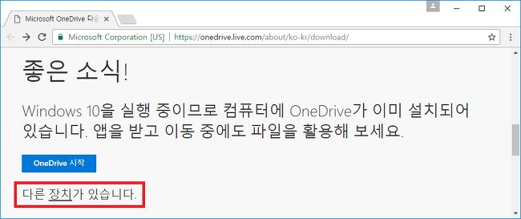
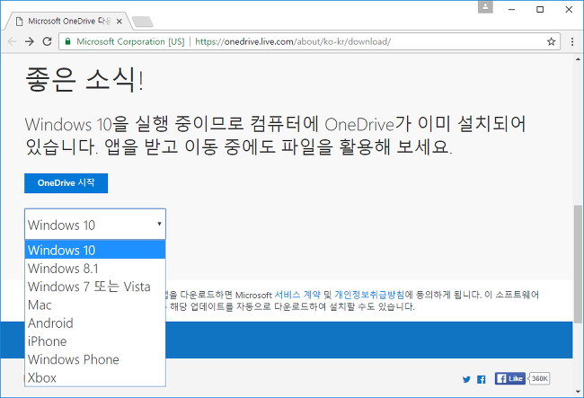
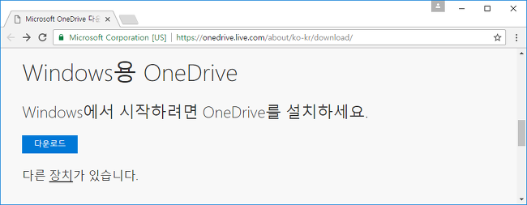

Windows 10에서 OneDrive를 완전히 제거하기위한 명령 줄 도구
OneDrive 원드라이브
마이크로소프트의 클라우드 드라이브. 예전 이름은 SkyDrive였으며, 2014년 2월 19일 OneDrive로 이름이 바뀌었다. 원도우10을 사용하면 기본으로 설치되어 있습니다. 이것은 실시간으로 컴퓨터에 변화가 있을 때 실시간으로 싱크를 맞추게 됩니다.
원도우 10에서는 기본 제공하는 서비스지만 용량이 5GB로 개인 문서나 기본 파일들을 올리기에는 괜찮은것 같으나 저처럼 대용량의 파일을 하드에 저장하고 사용하는 사람으로서는 원드라이브는 그리 좋은 클라우드는 아니라서 또는 잘못 클릭하여 로그인창이 나타나거나 하면 궈찮기도 해서 이번에 깔끔하게 삭제하는 방법을 적으려고 합니다. 인터넷에 떠도는 글을 수집하고 나름 간단하고 쉬운 방법을 적으려고 합니다.
삭제하기
귀찮게 말을 많이 하지 않고 바로 밑의 파일을 받아 실행만 하시면 됩니다. 설명이 필요하신 분들은 밑의 글을 읽어 보시길 바랍니다.
원도우10에서 원드라이브 삭제

대다수 블로거는 CMD창을 이용해서 삭제한다거나 로컬 그룹 정책 편집기를 이용해서 사용방지를 선택해서 하더군요. 물론 저처럼 Uninstaller를 선택해서 삭제도 합니다. 그중 쉬운 부분을 소개 하려고 합니다.
마침 해외에서 이 부분을 쉽게 할 수 있게 미리 머리 좋으신 분들이 만들었더군요. 위에 다운이나 설명하듯이 조금더 버전 향상된 파일을 받기 원하시면 밑의 링크로 가셔서 다운하시면 됩니다.

다운 받은 파일을 압축 해제하면 onedrive-uninstaller-master 라는 폴더에서 2개가 나옵니다.

그중 OneDrive-Uninstaller.cmd라는 파일을 실행(OR 관리자 권한으로 실행)하시면 됩니다.

그후 1~3분 정도 기다리시면 원도우 10에서 원드라이브가 깔끔하게 제거됩니다.

탐색기를 열어 보시면 원도우면 OneDrive가 없어진 것을 볼수 있습니다.
참고 - OneDrive설치
원도우10에서 OneDrive를 삭제하더라도 다시 설치 하려고 사이트 가면 원도우10이 설치되어 있다고만 나와서 OneDrive시작 만 됩니다.

이때 다른 장치가 있습니다. 를 클릭하여

원도우 10이 아닌 다른 운영체제를 선택하시면 다운로드가 됩니다.

위의그림은원도우7을 선택한 화면입니다. 다운로드를 클릭하시면 재설치가 됩니다.
이상 원도우10에서 원드라이브 삭제를 원하시는 분들에게 도움이 되었으면 합니다.